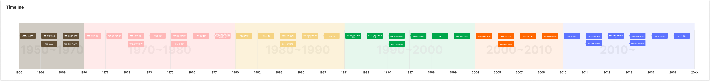

KING GOD JONY
TV가 우리 곁에 함께한 시간
123124123123 Hour

by JONY
Far Far away in the TV Worlds
1950s
1950~1970
한국 버라이어티 쇼의 아버지 <쇼쇼쇼>
버라이어티 쇼의 대표적인 예인 1964년 KBS의 <쇼쇼쇼>는 음악을 중심으로 다양한 장르를 혼합한 본격적인 리얼 버라이어티 쇼로, 한국 예능사에서 기념비적인 프로그램이었다.
이 프로그램은 이후 KBS <해피 선데이>, MBC <일밤> 등과 같은 리얼 버라이어티 쇼의 선구적 흐름을 형성했다.
이러한 프로그램들은 대중과의 소통을 목적으로 매번 다른 미션을 해결해나가는 실험적 장르로 발전해왔다.
한편, KBS, TBC, MBC의 차례로 개국하며 방송 3사가 과점적인 시장 구조를 형성, 경쟁적으로 엔터테인먼트 프로그램을 편성하기 시작했다.
이로 인해 프로그램의 내용은 점차 선정성이 높아지고 질적 하락이 눈에 띄게 증가했다.
그 결과, 1977년 TV 코미디 전면 폐지를 포함한 강도 높은 TV 콘텐츠 검열이 도입되었다.
한국의 코미디 프로그램은 1940년대 미국에서 시작된 극장의 슬랩스틱 코미디 전통을 계승했다. 초기에는 미국처럼 유랑극단의 만담이나 막간 꽁트를 TV로 옮겨왔고, 이러한 코미디 프로그램들은 버라이어티 쇼와 함께 발전해왔다.
1956
1964
KBS <코미디 고스톱>
TBC <쇼쇼쇼>
1969
MBC <웃으면 복이 와요> TBC <웃음의 파노라마>
HLKZ TV <노래파티>
1970s
1970~1980
정부의 규제와 억지 웃음
군사정권의 미디어 정책은 1961년 박정희 정권이 펼친 이중적 미디어 정책에서 시작되어,
1987년 민주화 운동 전까지 미디어 정책의 근간이 되었다.
특히, 1971년 제정된 <국가보위에 관한 특별조치법>을 기점으로, 각 방송사는 공서양속(公序良俗)을 해친다는 명목 하에 프로그램의 폐지 또는 축소를 겪게 된다.
1977년 유신체제 말기에는 코미디에 대한 제재가 발표되었고, 이러한 정치적 억압으로 인해 제작 과정에서 요구되는 정치적 자율성이 크게 위축되었다.
그 결과, 코미디 프로그램은 정치 권력의 강력한 규제와 감시 속에서 자유롭게 표현되지 못하고 억지 웃음을 강요받는 상황에 놓이게 되었다.
1970
TBC <코메디 극장>
1971
“문화 공고부 담화문”
1972
TBC <명량극장>
“국가안보위주연에시책”
1973
“방송법 개정”
1975
“코미디언 공체 제도 도입”
“방송시간 제도”
1976
“TV 편성 지침”
1977
“탤레비전 코미디 전면 폐지 또는
코미디언의 타 프로그램 출연 금지”
1980s
1980~1990
언론 통페합과 해학의 민족
1979년 12.12 군사반란과 1980년 5.17 내란으로 집권한 전두환은 언론을 체제에 순응시키기 위해 언론 통폐합 정책을 실행한다.
언론 통폐합 이후 TBC의 <쇼쇼쇼>는 KBS로 통합되고 1982년 종방하여 역사 속으로 사라졌지만, 이는 훗날 KBS <해피 선데이>나 MBC의 <일밤> 등으로 이어진다.
또한, KBS2 채널에서 방영한 <유머 일번지>의 “회장님 우리 회장님”, “네로 25시” 등을 통해 군사정권과 자본가들을 해학 등으로 승화시켰다.
이런 지배권력에 대한 풍자는 오늘날 KBS <개그콘서트>, TVN 등을 통해 이어진다.
1980
“언론 통페합”
1982
KBS <쇼쇼쇼> 종방
1983
KBS2 <유머 일번지>
KBS2 <쇼 일요특급>
1985
MBC <토요일 토요일은 즐거워>
1987
민주화 운동
1990s
1990~2000
대중문화의 부흥과 방송 프로그램의 혁신
1987년 민주주의의 제도화 이후 미디어 격변기가 도래하고 대중문화의 영향력이 확대되었지만,
IMF 사태로인해 다시금 침체를 불러온다
방송사들은 대중의 사기를 올리기 위해 다양한 프로그램들을 새롭게 편성한다.
1987년 민주화와 IMF(1998)이후로 대중의 의식 수준이 상승되었고 휴식 개념의 오락보다는 문화와 예술을 중시하는 사회적 분위기가 형성되되어 집단보다는 개인의 가치가 담론의 중심을 차지한다.
또한, 대중은 TV에서 위안과 재미를 찾으려고 하는 니즈를 보여주었고 방송사는 이에 맞는 편성을 구성했다.
신자유주의적 자본주의의 전면화로 인해 사회가 불안정하던 1990s 말부터 2000s 초까지 등 공공성을 강조하는 프로그램이 늘어났다.
1991
MBC <이경규의 몰래카메라>
1992
MBC <오늘은 좋은 날>
1996
MBC <이경규가 간다>
MBC <칭찬합시다>
1997
KBS <쇼 토요특급>
1998
“IMF”
1999
KBS2 <개그 콘서트>
2000s
2000~2010
코미디 프로그램의 경쟁과 혁신
2000년대 초반에는 <이경규가 간다>, <작은 도서관> 등 공익 기반의 예능이 인기를 끌었지만,
2000년대 중반에 드러서며 예능은 다양한 방식으로 서바이벌 내러티브, 경쟁방식이 도입되었고,
2004년 MBC <무한도전> 등을 시작으로 한국식 버라이어티 쇼의 탄생을 알린다.
2004
KBS2 <해피 선데이>
2005
MBC <무한도전>
MBC <칭찬합시다>
2007
KBS2 <1박 2일>
2008
SBS <패밀리가 떴다>
2010s
2010~Now플랫폼의 다양화와 새로운 시도 2010년에 들어서며 다양한 프랫폼에서 새로운 시도가 일어난다.
<나 혼자 산다>와 같은 관찰 예능이라는 새로운 형식의 버라이어티 쇼 프로그램들이나,
<신서유기> 등 여행을 기본 컨셉으로 잡는 프로그램,
일상에 녹아들며 시민들을 상대로 토크와 퀴즈쇼를 진행하는 <유퀴즈 온 더 블럭> 등 다양한 플랫폼에서 새로운 시도들이 일어나기 시작했다.
2010SBS <런닝맨>
2011tvN <코미디빅리그>tvN
2012MBC <우리 결혼했어요>
2013MBC <진짜 사나이>MBC <나 혼자 산다>
2015jtbc <신서유기>
2018tvn <유 퀴즈 온 더 블럭>
What is Next?
참고 문헌
Works Cited
Thesis
(신상기. 2015) 텔레비전 예능의 대중문화적 함의 : 한국 지상파 텔레비전 리얼 버라이어티 쇼를 중심으로
(유경한. 2017) 1977년 코미디 폐지 소동 이후 텔레비전 코미디 제작시스템의 변화:코미디 인력의 공개채용제와 대본(스크립트)제 도입을 중심으로
(임대근. 2012) 한국 텔레비전 드라마의 역사와 특징
(박용규. 2014)한국 텔레비전 음악버라이어티쇼의 성쇠 -TBC-TV의 ‘쇼쇼쇼’ 를 중심으로-
Sites
위키백과 (https://www.wikipedia.org/)
국가 기록포털 (https://www.archives.go.kr/next/viewMainNew.do)